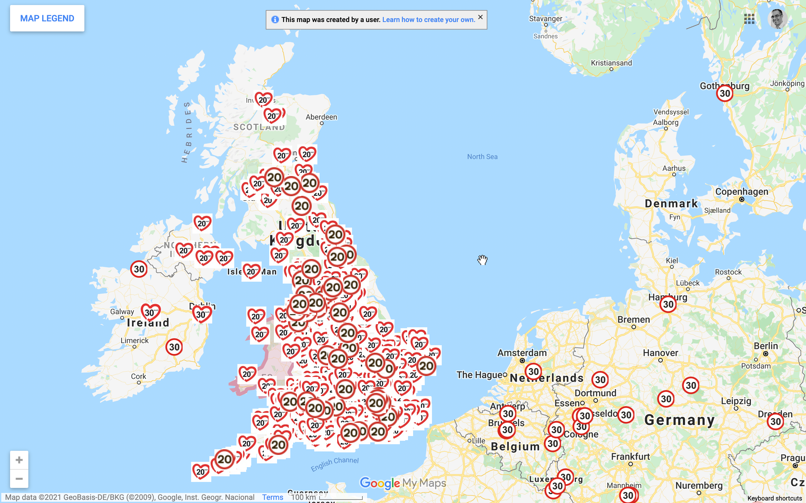

More than 70% of people in Britain support 20mph speed limits.1 There are many benefits, but three big ones are that it is
- healthier… by encouraging people to hop on the bike or walk on more friendly roads
- safer… larger speeds = more accidents and more serious injury
- cleaner… there is much less pollution at slower speeds, particularly for stop-and-go accelerating as is common in residential areas
People in NG support it
There are plenty of places across the UK that are campaigning for 20mph and many, like Nottingham City2, have decided to go for it. Interestingly, for the Nottingham crowd, support for 20mph in the city centre was 71% - very much in line with UK-wide numbers.
It is hard to imagine support would be any less in West Bridgford and other parts of Nottinghamshire.
There are many campaigns across the UK (and beyond)
 The live view of the map for https://www.20splenty.org/ is here on google maps
Share and talk to your councillor to find out if they support it, too.
-
Tapp, Nancarrow & Davis, 2015 (paper), (news release) ↩︎
-
https://www.transportnottingham.com/consultations/city-centre-20-mph/ ↩︎